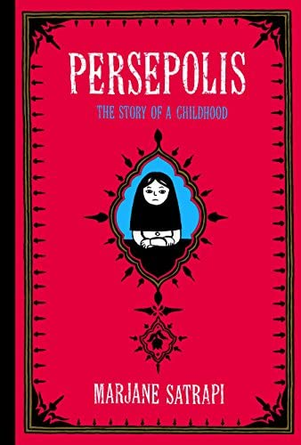

|  |
Persepolis: The story of a Childhood by Marjane SatrapiWise, funny, and heartbreaking, Persepolis is Marjane Satrapi’s acclaimed graphic memoir of growing up in Iran during the Islamic Revolution. In powerful black-and-white comic strip images, Satrapi tells the coming-of-age story of her life in Tehran from ages six to fourteen, years that saw the overthrow of the Shah’s regime, the triumph of the Islamic Revolution, and the devastating effects of war with Iraq. The intelligent and outspoken only child of committed Marxists and the great-granddaughter of one of Iran’s last emperors, Marjane bears witness to a childhood uniquely entwined with the history of her country. Persepolis paints an unforgettable portrait of daily life in Iran and of the bewildering contradictions between home life and public life. Marjane’s child’s-eye view of dethroned emperors, state-sanctioned whippings, and heroes of the revolution allows us to learn as she does the history of this fascinating country and of her own extraordinary family. Intensely personal, profoundly political, and wholly original, Persepolis is at once a story of growing up and a reminder of the human cost of war and political repression. It shows how we carry on, with laughter and tears, in the face of absurdity. And, finally, it introduces us to an irresistible little girl with whom we cannot help but fall in love. Quotes:
|